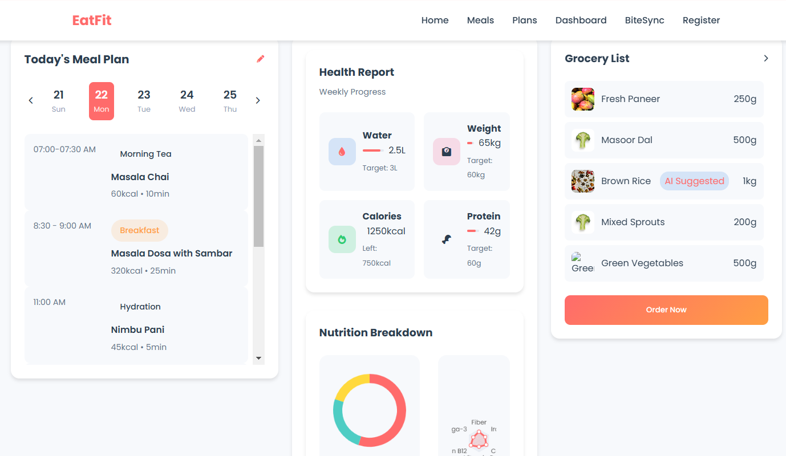
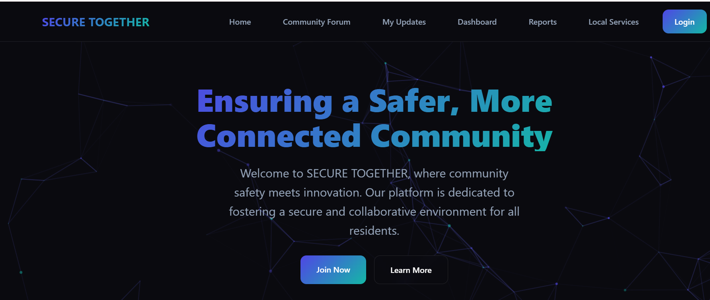
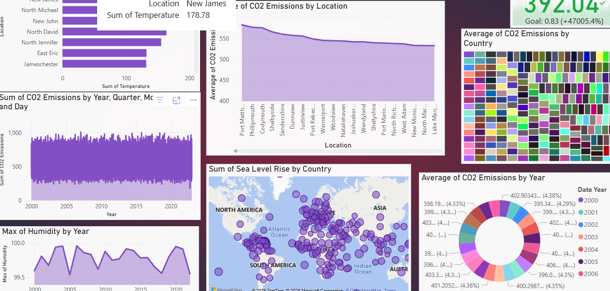

Projects & Research

EatFit
Developed a web application for personalized, health-focused food ordering. Integrated the Gemini API to enable AI-powered meal recommendations with dynamic filtering based on user input.
Built a real-time nutrition dashboard using the Edamam API to display caloric and macronutrient data. Emphasized modular component design and performance optimization. Deployed the application on Vercel for reliable and fast access.
Built a real-time nutrition dashboard using the Edamam API to display caloric and macronutrient data. Emphasized modular component design and performance optimization. Deployed the application on Vercel for reliable and fast access.

SecureTogether
Built and deployed a web platform to streamline community reporting of non-emergency issues like streetlight failures, noise, and infrastructure concerns. Developed with HTML, CSS, and JavaScript, and deployed on Vercel.
Integrated Leaflet.js for precise location-based issue mapping and Particle.js for dynamic visuals. Implemented JS-based workflows simulating authority-side resolution pipelines, with a dashboard for issue tracking, categorization, and location-based news updates.
Integrated Leaflet.js for precise location-based issue mapping and Particle.js for dynamic visuals. Implemented JS-based workflows simulating authority-side resolution pipelines, with a dashboard for issue tracking, categorization, and location-based news updates.

EDA on Underwater Plastic Detection from Sonar/Image Data
Performed exploratory data analysis on sonar and image datasets to identify and classify underwater plastic debris. Utilized advanced statistical techniques and visualizations to uncover patterns, assess data quality, and clean the data for the development of machine learning models for environmental monitoring and pollution detection.

Demographic Insights into Smoking Habits: Statistical Analysis and Predictive Modeling
Conducted a comprehensive analysis of smoking behaviors using Python, focusing on demographic factors such as gender, age, income, and education. Performed Chi-Square tests to examine statistical associations and validate hypotheses on smoking habits. Applied Principal Component Analysis (PCA) for dimensionality reduction, improving model interpretability and performance.

Temporal Analysis of CO₂ Emissions for Climate Forecasting
This project analyzes 25 years of global CO₂ emission data using advanced time-series visualizations built with Power BI. It uncovers emission trends, seasonal patterns, and anomalies, and recommends potential KPI (Key Performance Indicator) tiles to aid in dashboard-based monitoring for climate forecasting and policy decision-making.

Mapping Orbital Congestion: Exploratory Analysis of Earth's Artificial Satellite Ecosystem
Performed exploratory data analysis on real-time orbital object data sourced via the space-track.org API, comprising active satellites and debris fragments. Analyzed parameters such as object type, launch source, orbital regime, and decay statistics to identify spatial trends, highlight potential collision risks, and support orbital traffic modeling.